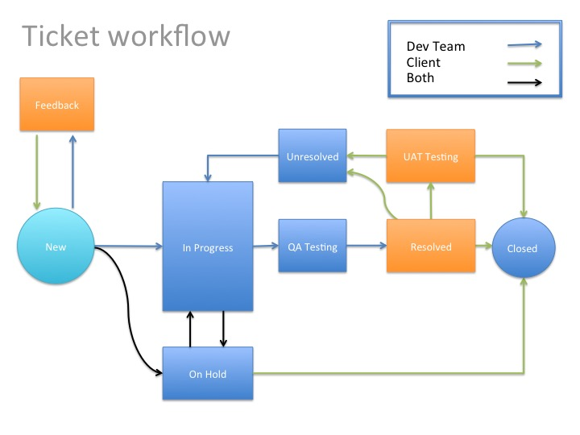
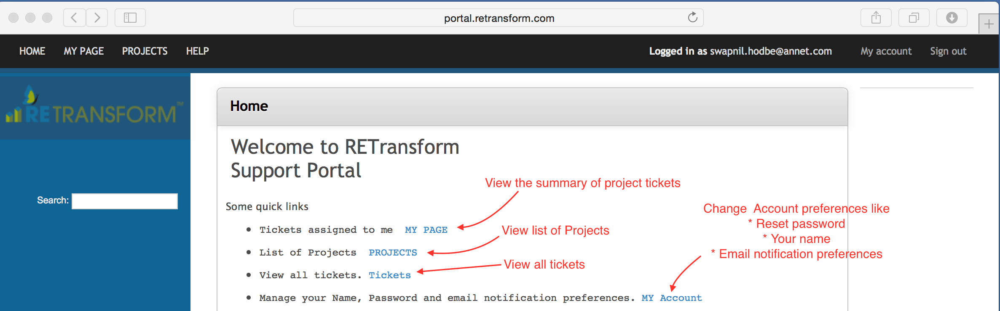
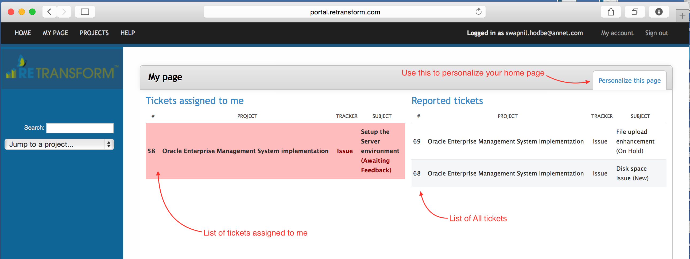
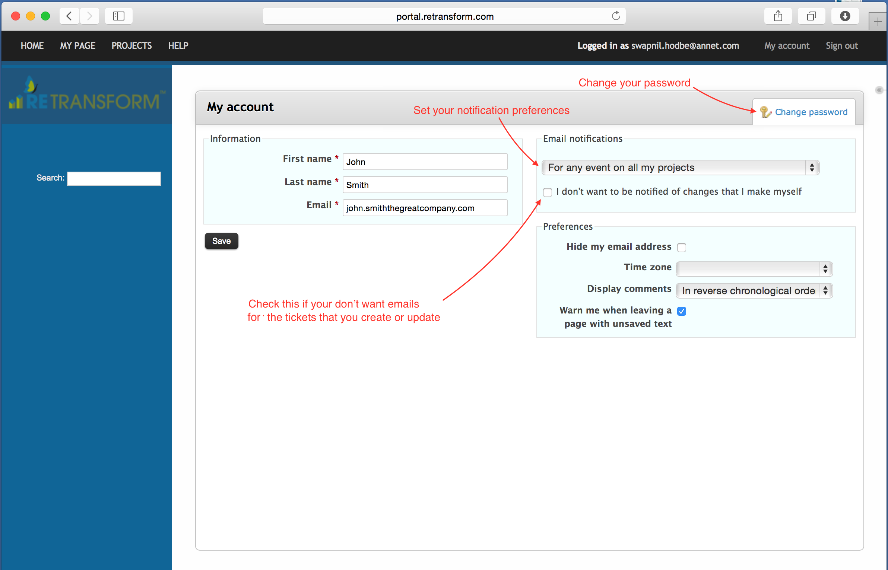
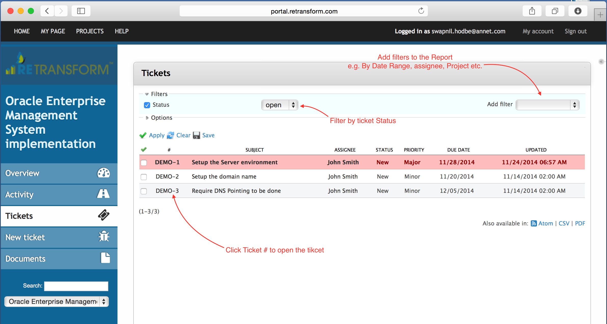
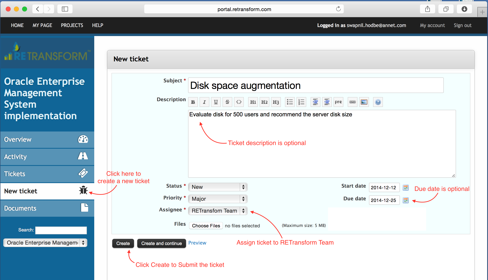
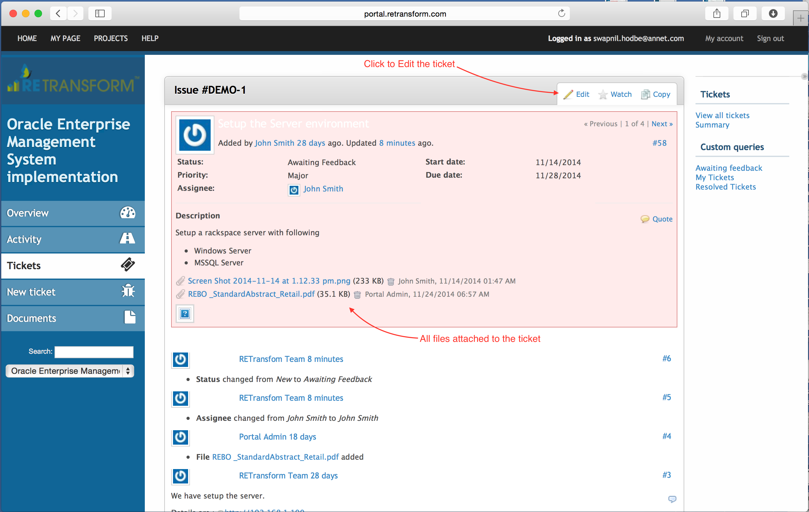
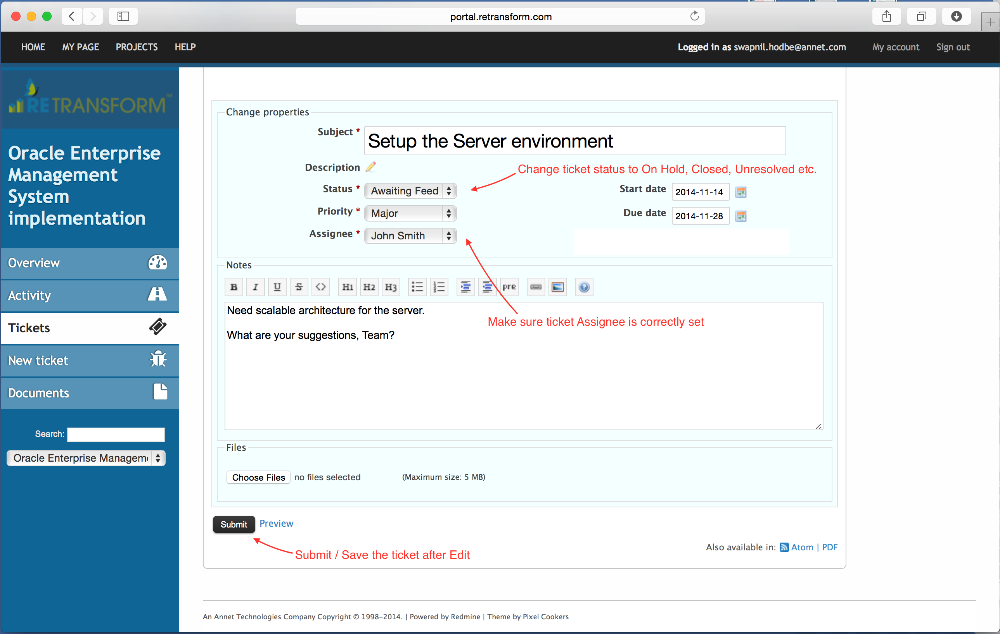

Help
Getting Started with Support Portal.
Using Portal should be intuitive. Your Projects are defined in the system. You can select any project and view it, add and update tickets to it.
For each task on a project, a Ticket is created. Development Team can also create tickets.
Using the system you are expected to:
A : Create New tickets. B : Update ticket with comments, add files and change ticket Status. C : Provide information for tickets set to "Awaiting Feedback" Status. D : When ticket is set as "Resolved", either close it or set it as "Unresolved".You can track progress of your ticket by looking at the ticket status. Below explains typical ticket transitions.

- For every task, a Ticket is created. The status of a fresh Ticket "New".
- If Team needs any clarification on the Ticket, comment is added to Ticket and Status changed to "Awaiting Feedback".
- Provide the required information about the Ticket by adding Comments and/or attaching files to your ticket.
- When the Team starts working on the ticket, the status is changed to "In progress".
- "In progress" tickets are changed to "QA Testing", when the team starts the Testing the ticket.
- Once QA is completed, ticket Status is chagned to "Resolved".
- For every ticket in "Resolved" status, you are expected to review the results and close the ticket.
- During UAT (User Acceptance Testing), change the Status to "UAT Testing"
- Once a Ticket is found to be completed as per expectations, change the Ticket Status to "Closed"
- If Ticket resolution is found unsatisfactory, change the status to"Unresolved".
- You may also chagne the Status to "On Hold", to temporarily stop work on the Ticket.
Screenshots below will help you understand using the system. In case of any query related to using the system, ask the Team for a Demo of the System.

( Home Page )

( My Page )

( Change your account preferences )
( Project Summary Page )

( View tickets, filter list as per required criteria )

( Create a new Ticket)

( View Ticket )

( Modify a ticket )